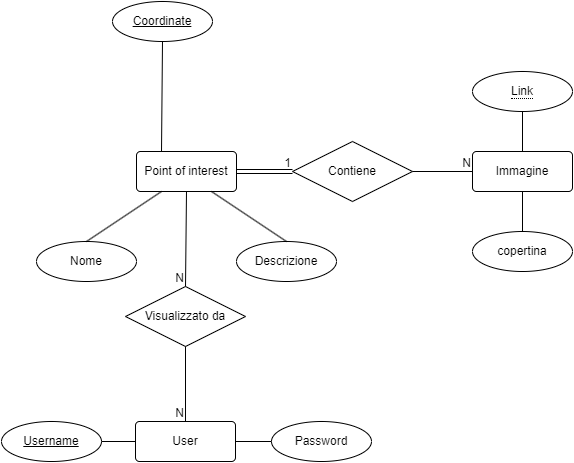
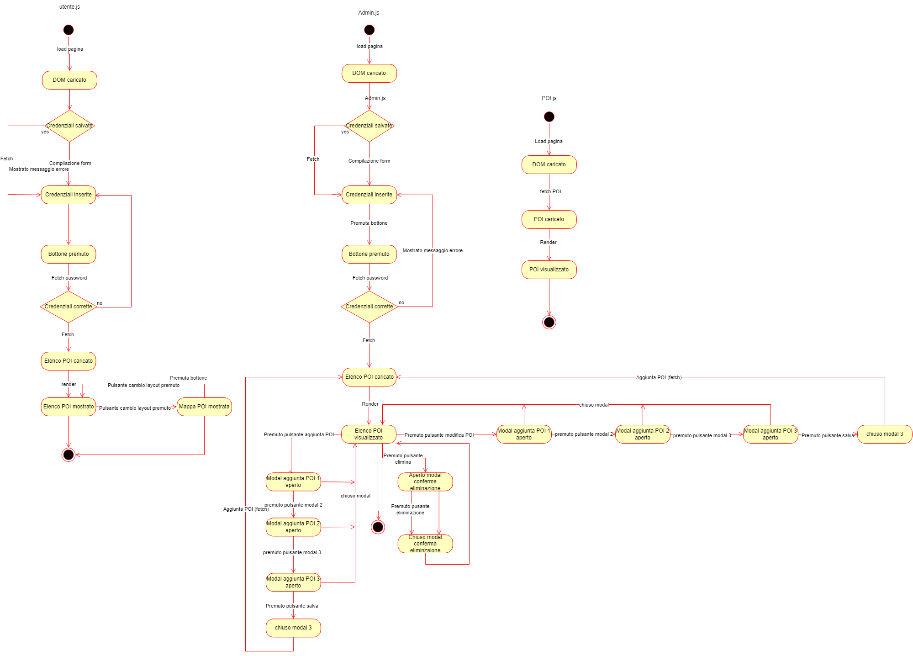
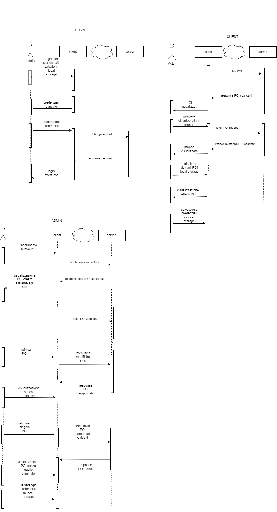

Documentazione
Point of Interest - ROME
Creazione progetto per gestire i punti di interesse della città eterna: Roma
- Classe/Anno: 5Cinfo - 23/24
- Author: Stefano Marocco, Manuel Del Zotto, Mael Ghezzi
- Creato: 19 novembre 2023
- Ultima modifica: 14 Dicembre 2023
Architettura informazione
Diagramma rappresentate l'architettura dell'informazione
UML
Qui vanno inseriti i vari diagrammi UML
Diagramma di Casi d'uso
Qui va inserito il diagramma di casi d'uso (immagine)

Diagramma di oggetti
Diagramma d'oggetti delle pagine e delle relazioni tra le stesse
Diagramma di Stato
Diagramma di stato delle tre pagine
Diagramma di Sequenza
Diagramma di sequenza di ogni pagina
Contenuti del progetto
|
Piazza della Repubblica Fonti: Wikipedia, Tripadvisor |
Una delle piazze più grandi e belle di Roma in centro a Castro Pretorio. Ex storica località termale ora centro di ritrovo locale e culturale. In mezzo a via delle Terme di Diocleziano e via Nazionale c’è Piazza della Repubblica. Originariamente chiamata piazza dell’Esedra per la peculiare forma dello slargo, il punto di interesse si trova in pieno centro, a poche centinaia di metri dalla stazione Termini. Oltre ad essere uno splendido punto di incontro per i romani, la piazza, ospita la Fontana delle Naiadi e, poco più lontano, la Basilica di Santa Maria degli Angeli e dei Martiri. |


|
|
Palazzo del Quirinale Fonti: Wikipedia, www.quirinale.it |
Simbolo dello Stato italiano, il Palazzo del Quirinale non è solo la residenza ufficiale del Presidente della Repubblica dal 1946, ma è anche un tesoro di artefatti nazionali dal valore inestimabile. Costruito nel 1573 il Palazzo del Quirinale è una meraviglia dal grande calibro, sia artistico e architettonico che politico. È inoltre possibile visitare in un tour guidato molte delle stanze del palazzo tramite prenotazione nel sito ufficiale. Le sue gargantuesche dimensioni sono un altro tratto distintivo, visti i 110 500 metri quadrati di estensione. Sicuramente più interessante è scoprire tutta la sua storia, con tutti i passaggi di proprietà che ha subito in 450 anni. Tappa essenziale per chiunque voglia vivere a pieno la bella Roma. |


|
|
Piazza Venezia Fonti: Wikipedia, Tripadvisor |
Ai piedi del Campidoglio e del glorioso omonimo Palazzo Venezia, è situata Piazza Venezia, magnifico e colorato spiazzo nel cuore di Roma. Centro intersezioni delle strade più importanti della capitale. Circondata da tre edifici storici: Palazzo Venezia, sede del museo nazionale, Palazzo Bonaparte e Palazzo delle Assicurazioni Generali; piazza Venezia è nodo d’intersezione per la centralissima via del Corso, via di San Marco, via dei Fiori Imperiali e via del Plebiscito, rendendo lo slargo una delle piazze più ricche ed importanti della città. Oltre ai negozi turistici limitrofi, la piazza è un grande tesoro storico e culturale, soprattutto considerando le cicatrici lasciate dall’intervento fascista nel tragico e oscuro ventennio. Destinazione comoda da raggiungere con la metropolitana. |


|
|
Fontana di trevi
Fonti: Wikipedia, Tripadvisor, museum Rome |
La più famosa delle fontane romane: un gioiello di acqua e di pietra. Nasce dal 1732 da Papa Clemente VIII; utilizza l'acquedotto vergine, l'ultimo degli acquedotti romani rimasto intatto fino ai giorni nostri. È la più famosa delle fontane Romane, con milioni di turisti al giorno è nota per la buona sorte se si lancia una moneta nell'acqua. Quattro statue del 1735 ornano la grande opera e a partire da sinistra simboleggiano l'Abbondanza dei frutti di Agostino Corsini, la Fertilità dei campi di Bernardo Ludovisi, i Doni dell'autunno di Francesco Queirolo e l'Amenità dei prati di Bartolomeo Pincellotti. Nella profonda nicchia centrale è collocata la statua di Oceano posizionato sopra una grande conchiglia trainata da due cavalli marini alati, uno rabbioso e l'altro pacifico, guidati da un tritono giovane e da uno adulto per evidenziare le diverse caratteristiche dell'età dell'uomo e della natura. |


|
|
Villa borghese
Fonti: Wikipedia, Turismo Roma |
Un cuore verde nella città, dalla storia e cultura enrome. ll Parco di Villa Borghese occupa una vasta area nel cuore della città. La villa racchiude al suo interno edifici, sculture, monumenti e fontane, opera di illustri artisti dell'arte barocca, neoclassica ed eclettica, contornati da alberi secolari, laghetti, giardini all'italiana e grandi spazi liberi, realizzati con grande cura. All'interno del parco potrete trovare una galleria d'arte contenente capolavori di Tiziano, Raffaello e Michelangelo. Ammirare oltre mille animali nello storico Zoo di Roma o una copia del, orami scomparso, globhe theatre di Londra. Nel Settecento venne realizzato un sistema di viali simmetrici e perpendicolari con i templi neoclassici e Piazza di Siena, da allora il parco è rimasto invariato, creando una atmosfera mistica e sacra nel camminare sui quei lunghi viali. |

|
|
Campo de fiori Fonti: Wikipedia, Turismo Roma |
Una piazza viva, storica e giovanile; pervasa dalla vivacità romana e dalla vita mondana serale. Campo de' Fiori è una delle aree più particolari e amate della Capitale. È il contesto ideale per una piacevole passeggiata tra i suoi storici banchi di legno dove acquistare fiori, frutta, carne e pesce sempre freschi, ma anche per una originalissima foto ricordo da condividere sui social con gli amici. Edificata sopra un coloratissimo campo di fiori - come il nome ricorda -. Piazza del mercato, al centro della piazza si trova una stata realizzata per commemorare gli eretici giustiziati in quel luogo con esecuzione capitale. All’imbrunire, la piazza si anima di un’atmosfera conviviale e vivace e si trasforma nel luogo perfetto in cui ritrovarsi per il classico aperitivo nei lounge bar alla moda che la circondano o per un’abbondante cena in uno dei suoi caratteristici ristoranti all’aperto, per poi immergersi nell’elettrizzante movida capitolina. Vicino alla piazza si trovano negozi per fare shopping o le più tipiche locande romane e botteghe artigianali. |


|
|
Colosseo Fonti: Turismo Roma |
Il momumento più famoso del mondo. ricordo di una splendidà civilta e simbolo della modernità storica capitolina Probabilmente il monumento più famoso al mondo e simbolo della grandezza di Roma, l'Anfiteatro Flavio, meglio conosciuto con il nome di Colosseo per la colossale statua in bronzo raffigurante Nerone che si trovava nelle vicinanze, si innalza nel cuore archeologico della città, e da quasi duemila anni racconta una storia ininterrotta di fascino e magnificenza. Il Colosseo, che ancora oggi è l’anfiteatro più grande al mondo, fu voluto dall’imperatore Tito Flavio Vespasiano che per edificarlo scelse la zona compresa tra i colli Palatino, Esquilino e Celio, precedentemente occupata dal laghetto artificiale della Domus Aurea di Nerone. La sua costruzione iniziò nel 70 d.C. e terminò nell’80 d.C. sotto l’impero di Tito, figlio di Vespasiano. L'edificio, destinato ai combattimenti, ai giochi tra i gladiatori, alle simulazioni di caccia ad animali feroci ed esotici e alle naumachie, è composto da quattro ordini architettonici sovrapposti; i primi tre sono formati da ottanta arcate inquadrate da semicolonne, il quarto è suddiviso in riquadri intervallati da finestre. Nell'ultimo ordine, erano inseriti supporti in muratura e in legno per sostenere un immenso telone (velarium) che serviva a riparare gli spettatori dal sole e dalla pioggia. Lungo 189 metri, largo 156 metri, per un'altezza di oltre 48 metri, il Colosseo si estende su una superficie di 24.000 mq e poteva ospitare circa 50mila spettatori che potevano accomodarsi nella cavea, formata da gradinate in laterizio rivestite in marmo. L'arena, che misurava 76 metri per 46, era realizzata con una grande tavola di legno ricoperta di sabbia. urante il Romanticismo, il suo fascino di antica rovina attrasse letterati e artisti come Shelley, Byron, Dickens, Thomas Cole e Henry James. Per Stendhal, invece, il Colosseo rappresentava "le più belle vestigia del popolo romano", un luogo che "se ne avessi il potere, sarei tiranno, farei fermare il Colosseo durante i miei soggiorni a Roma". Periodicamente ospita esposizioni temporanee e spettacoli moderni. |


|
|
Piazza Navona Fonti: Turismo Roma |
Uno dei complessi urbanistici più spettacolari e caratteristici della Roma barocca. Piazza Navona è uno dei complessi urbanistici più spettacolari e caratteristici della Roma barocca. La piazza è stata costruita sui resti dello Stadio di Domiziano, costruito nel 86 d.C. per lo svolgimento di gare di atletica e corse di cavalli. I resti di questa antica struttura si trovano a 5-6 metri al di sotto dell’odierno piano stradale ed è possibile vederli ancora sotto un palazzo moderno in Piazza di Tor Sanguigna e nei sotterranei della chiesa di Sant’Agnese in Agone. La piazza è dominata dalla appena menzionata chiesa di Sant’Agnese in Agone, la cui costruzione fu ultimata nel 1672 in pieno periodo barocco. A fianco della chiesa si erge il Palazzo Pamphilj, inaugurato qualche anno prima anch’esso costruito in stile barocco e attuale sede dell’ambasciata brasiliana in Italia. Tre fontane ornano la piazza: la Fontana del Moro, così chiamata per la statua dell'Etiope che lotta con un delfino, la Fontana de’ Calderari, conosciuta anche come la Fontana del Nettuno, entrambe opere di Giacomo della Porta e, al centro, l’imponente Fontana dei Quattro Fiumi, opera di Gian Lorenzo Bernini. Sugli angoli di quest’ultima sono presenti delle monumentali statue marmoree dei quattro fiumi che rappresentano i continenti allora conosciuti: il Danubio per l’Europa, con il cavallo; il Gange per l’Asia, con il remo e il dragone; il Nilo per l’Africa, con il capo velato associato al leone ed alla palma; il Rio della Plata per l’America con un braccio sollevato ed accanto un armadillo. |


|
|
Basilica di San Pietro Fonti: Turismo Roma |
La più imponente chiesa di Roma e del mondo La moderna Basilica di San Pietro che domina l’omonima piazza fu costruita tra il 1506 e il 1626 nel luogo dove, secondo la tradizione cristiana è sepolto l’apostolo Pietro. Durante la costruzione dell’edificio si succedettero diversi architetti tra cui Bramante, Raffaello, Michelangelo, Bernini e altri. Quando si parla della Basilica di San Pietro non si può non menzionare la piazza su cui si affaccia: la piazza infatti è un’opera architettonica notevole e un grande esempio di architettura barocca. La piazza è divisa in due parti, la prima a forma di ovale con al centro un obelisco egiziano e la seconda a forma di trapezoide con proporzioni tali da annullare la distanza tra la piazza e la Basilica. Le due parti della piazza sono unificate da quattro colonnati che sorreggono un’architrave continua. Entrando all’interno della Basilica si possono vedere diverse opere d’arte, per esempio La Pietà di Michelangelo o il Baldacchino in bronzo del Bernini. Alla base di ogni colonna della chiesa sono scolpiti sette volti di una donna, dal concepimento alla nascita di un bambino, che rappresentano la Chiesa Madre di tutte le altre chiese. Una parte integrante della Basilica sono le Grotte Vaticane, tra il pavimento della basilica costantiniana e quello attuale; In questo posto si trovano le sepolture di molte figure importanti come Pio XII, Giovanni Paolo I e Giovanni Paolo II. Dalle grotte si può accedere alla necropoli precostantiniana dove si trova la tomba di San Pietro. |


|
|
Foro Romano Fonti: Turismo Roma |
Un grande sito archeologico che si trova nel centro di Roma Il Foro Romano è un grande sito archeologico che si trova nel centro di Roma. Anticamente un’area paludosa alla fine del VII secolo a.C. la valle fu bonificata e il luogo diventò il centro della vita pubblica per più di un millennio. Vennero costruiti nel Foro diversi monumenti, alle origini di carattere politico, religioso e commerciale e, successivamente, nel II secolo a.C. di carattere giudiziario. Alla fine dell’età repubblicana il Foro era diventato insufficiente per lo svolgimento delle attività amministrative della città e i monumenti aggiunti al Foro erano solo per il mostrare il prestigio degli imperatori, basti pensare ai Templi di Vespasiano e di Tito o all’Arco di Settimio Severo dedicato alle vittorie Romane. Augusto scelse il colle adiacente al Foro come luogo della propria abitazione e successivamente il colle fu scelto come sede dei palazzi imperiali e sorsero la Domus Tiberiana, la Domus Transitoria e poi la Domus Aurea, e infine il Palazzo Imperiale. |


|
Wireframes
Il progetto
In questa sezione vanno inserite ulteriori informazioni aggiuntive (es. credenziali) ed il link al progetto